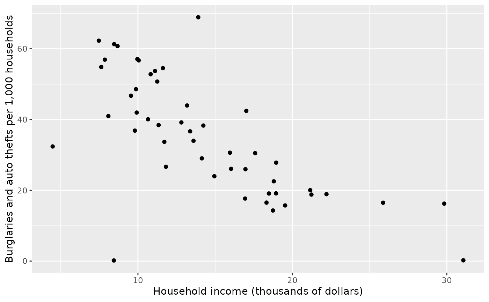
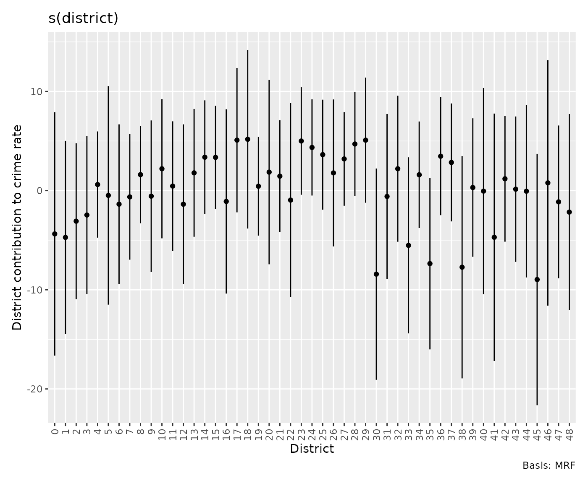
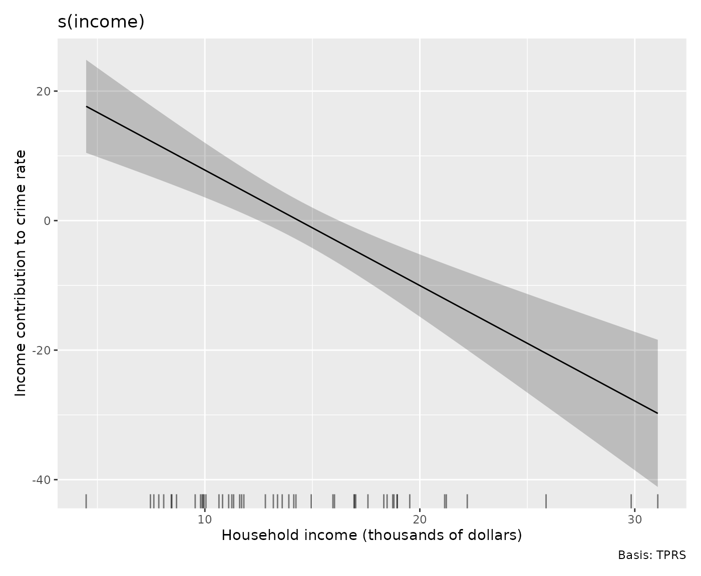
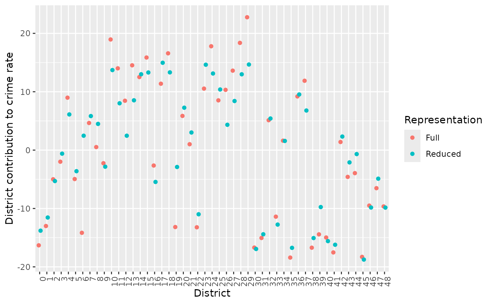
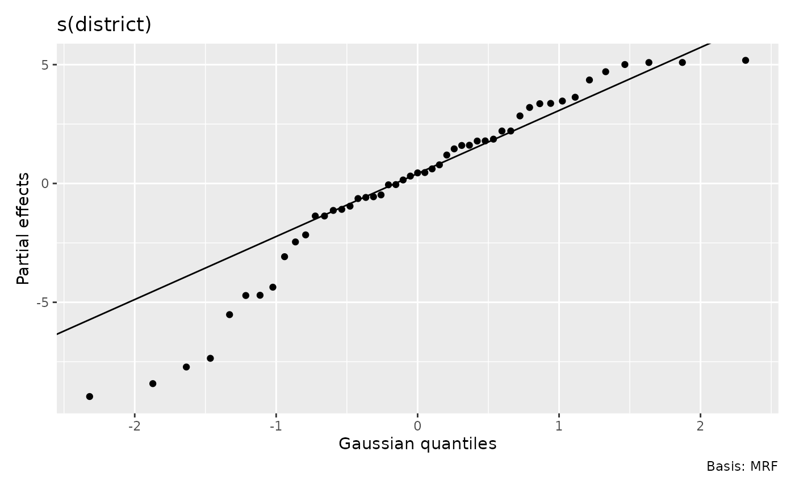
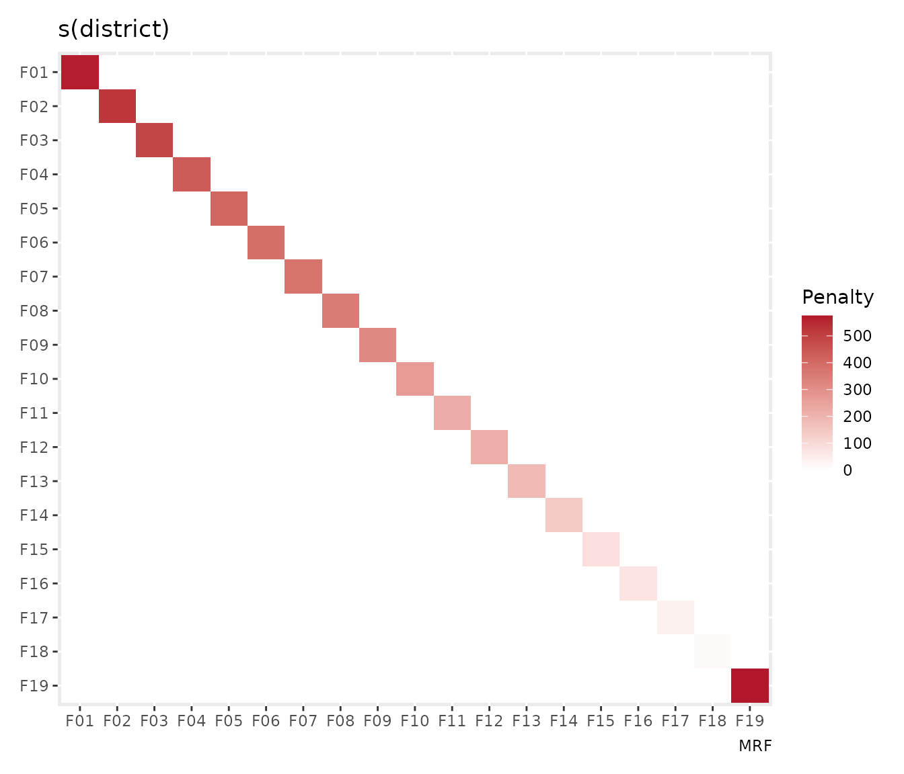
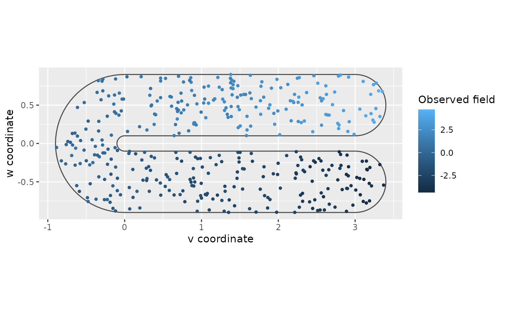
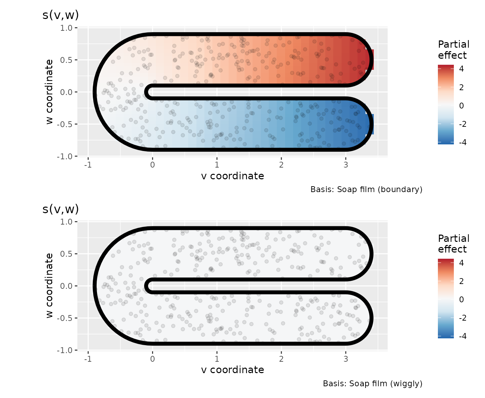
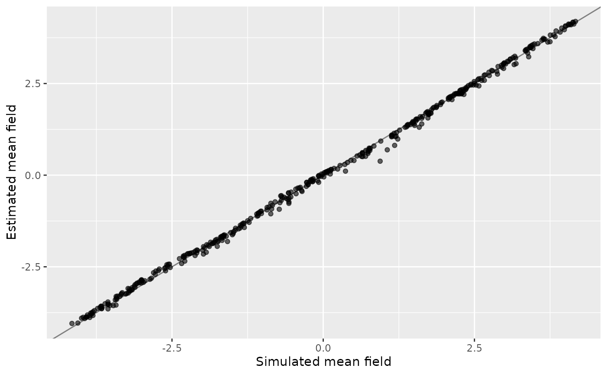
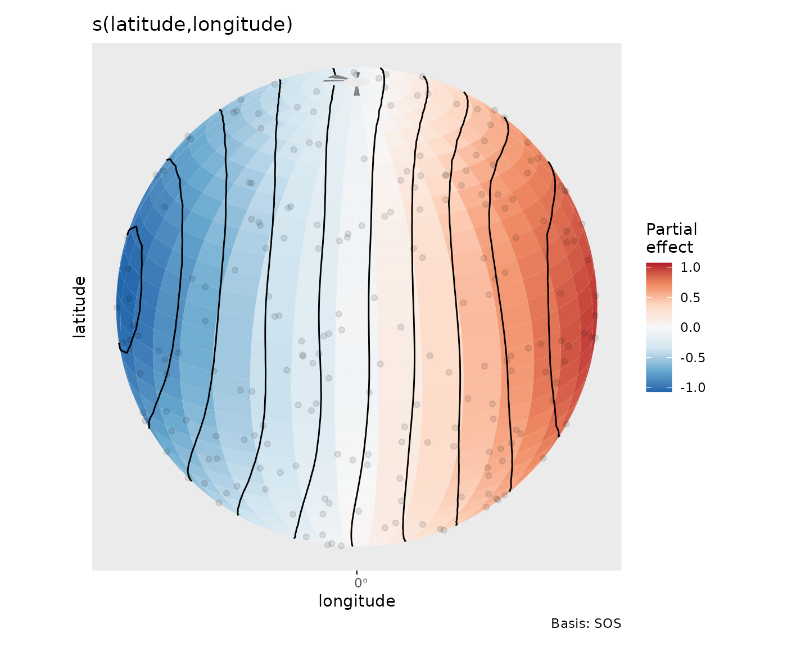

Choose a smooth for the spatial question
Source:vignettes/articles/spatial-smooths.Rmd
spatial-smooths.RmdSpatial proximity is not always a straight-line distance. Observations might represent adjacent districts, locations separated by a peninsula, or points on the globe. The appropriate smooth depends on that geometry. This article uses three examples to show how to fit those models and interpret gratia’s effect displays.
The examples require mgcv 1.9-4 or later. Spherical plotting also needs the optional sf package. Three-dimensional views need ggcube. The district and soap-film analyses run without either optional display package.
Are high crime rates explained by district income or location?
The Columbus data supplied with mgcv record residential burglary and
auto theft rates per 1,000 households in 49 districts. They also record
household income in thousands of dollars and provide district polygons.
These are rates, not counts, so fitting a Poisson
distribution to crime would misrepresent the response. A
Gaussian model is a starting approximation for variation in rates; a
count model would require counts and exposure data. See the data
documentation for the original source.
We adapt the worked examples in mgcv’s Markov random field documentation. The smooth gives each district an effect and penalises differences between neighbours. Neighbourhoods are derived from polygons that share vertices.
data("columb", package = "mgcv")
data("columb.polys", package = "mgcv")
ggplot(columb, aes(income, crime)) +
geom_point() +
labs(x = "Household income (thousands of dollars)",
y = "Burglaries and auto thefts per 1,000 households")
Start with the spatial pattern alone, and compare a full representation with a smaller one before adding income:
district_full <- gam(crime ~ s(district, bs = "mrf",
xt = list(polys = columb.polys)), data = columb, method = "REML")
district_small <- gam(crime ~ s(district, bs = "mrf", k = 20,
xt = list(polys = columb.polys)), data = columb, method = "REML")
district_income <- gam(crime ~ s(district, bs = "mrf", k = 20,
xt = list(polys = columb.polys)) + s(income, k = 6),
data = columb, method = "REML")
overview(district_income)
#>
#> Generalized Additive Model with 3 terms
#>
#> term type k edf ref.edf statistic p.value
#> <chr> <chr> <dbl> <dbl> <dbl> <dbl> <chr>
#> 1 Intercept parametric NA 1 1 22.2 <0.001
#> 2 s(district) MRF 19 5.43 19 0.512 0.0766
#> 3 s(income) TPRS 5 1.00 1.00 28.5 <0.001The full model has a district coefficient for every area, subject to
centring and the estimated penalty. The reduced representation uses
fewer coefficients to represent the same 49 area effects.
k = 20 restricts the available spatial patterns; it does
not mean only twenty districts are fitted. Adding income asks how much
spatial variation remains after accounting for its association with
crime rate.
Read district effects rather than basis coefficients
area_effects <- smooth_estimates(district_income, select = "s(district)",
interval = "credible")
head(area_effects)
#> # A tibble: 6 × 9
#> .smooth .type .by .estimate .se district .crit .lower_ci .upper_ci
#> <chr> <chr> <chr> <dbl> <dbl> <fct> <dbl> <dbl> <dbl>
#> 1 s(district) MRF NA -4.36 6.26 0 1.96 -16.6 7.91
#> 2 s(district) MRF NA -4.71 4.97 1 1.96 -14.4 5.02
#> 3 s(district) MRF NA -3.08 4.01 2 1.96 -10.9 4.78
#> 4 s(district) MRF NA -2.46 4.06 3 1.96 -10.4 5.50
#> 5 s(district) MRF NA 0.614 2.73 4 1.96 -4.74 5.97
#> 6 s(district) MRF NA -0.481 5.62 5 1.96 -11.5 10.5The rows are effects for areas, even for a
reduced-rank fit. They are not the coefficients of its smaller basis.
The same area labels identify predictions supplied with
data; a previously unknown district is not a valid
prediction location merely because it is adjacent to one in the
model.
draw(area_effects, angle = 90,
ylab = "District contribution to crime rate", xlab = "District")
draw(district_income, select = "s(income)",
xlab = "Household income (thousands of dollars)",
ylab = "Income contribution to crime rate")
Positive area effects indicate rates above the fitted intercept and income contribution. The income association is downward over this dataset’s range, while individual adjusted district effects have substantial uncertainty. Use their intervals when comparing districts. Neighbouring districts borrow information through the penalty on the mean effects. The Gaussian response errors are still assumed independent, so inspect residual spatial patterns before relying on these intervals.
To see how much the smaller spatial representation changes the fitted pattern, compare its area effects on the same district labels:
rank_effects <- rbind(
transform(smooth_estimates(district_full), representation = "Full"),
transform(smooth_estimates(district_small), representation = "Reduced")
)
ggplot(rank_effects, aes(district, .estimate, colour = representation)) +
geom_point(position = position_dodge(width = 0.5)) +
labs(x = "District", y = "District contribution to crime rate",
colour = "Representation") +
theme(axis.text.x = element_text(angle = 90, hjust = 1))
The comparison shows how reducing the basis changes the spatial-only fits. Use it to assess whether the smaller representation retains the district patterns of interest. The neighbourhood graph determines which area effects borrow information from each other, so check that it represents the connections relevant to your analysis.
draw(district_income, select = "s(district)", mrf_plot = "qq")
This QQ view describes the distribution of fitted area effects. They
are correlated and can have unequal marginal variances, so this is not a
test of independent normal effects or a response-distribution
diagnostic. For response checks use appraise() and consult
Choosing diagnostic references.
One can also inspect the neighbourhood penalty itself:

This is the penalty expressed in the fitted reduced basis; its rows are basis coefficients rather than districts. Larger diagonal entries indicate coefficient directions that are penalised more strongly. Before its basis transformation, the MRF penalty counts neighbours on the diagonal and uses negative off-diagonal entries for neighbours. Use the area plots above to inspect district labels and intervals; the penalty plot explains how their underlying coefficients are regularised.
How should a surface behave across a peninsula?
For a bounded region such as a water body, locations on opposite sides of land can be close in Euclidean distance and distant along the water. A soap-film smooth respects the supplied boundary. We use a simulation from mgcv’s soap-film example, retaining its curved boundary, interior knots and simulated test surface. The question is whether a boundary-aware smoother can recover a field without joining opposite sides across the excluded region. We use REML instead of the example’s default smoothing selection.
bnd <- list(mgcv::fs.boundary())
names(bnd[[1]]) <- c("v", "w")
interior_knots <- expand.grid(v = seq(-0.5, 3, by = 0.5),
w = c(-0.6, -0.3, 0.3, 0.6))
set.seed(0)
v <- runif(600, -1, 4)
w <- runif(600, -1, 1)
truth <- mgcv::fs.test(v, w, b = 1)
y <- truth + rnorm(600, sd = 0.3)
inside <- mgcv::inSide(bnd, x = v, y = w)
water <- data.frame(v = v[inside], w = w[inside],
y = y[inside], truth = truth[inside])
ggplot(water, aes(v, w, colour = y)) +
geom_path(data = as.data.frame(bnd[[1]]), aes(v, w),
inherit.aes = FALSE, colour = "grey30") +
geom_point(size = 1) +
coord_equal() +
labs(x = "v coordinate", y = "w coordinate", colour = "Observed field")
The errors were generated as independent Gaussian noise with standard deviation 0.3, matching the Gaussian identity-link model fitted below.
Separate boundary variation from interior variation
water_fit <- gam(y ~
s(v, w, bs = "sf", k = 30, xt = list(bnd = bnd, nmax = 100)) +
s(v, w, bs = "sw", k = 30, xt = list(bnd = bnd, nmax = 100)),
data = water, knots = interior_knots, method = "REML")
overview(water_fit)
#>
#> Generalized Additive Model with 3 terms
#>
#> term type k edf ref.edf statistic p.value
#> <chr> <chr> <dbl> <dbl> <dbl> <dbl> <chr>
#> 1 Intercept parametric NA 1 1 -0.973 0.331
#> 2 s.v.w. Soap film (boundary) 28 15.6 28 850. <0.001
#> 3 s.v.w..1 Soap film (wiggly) 32 0.00141 32 0.0000397 0.458
smooths(water_fit)
#> [1] "s(v,w)" "s(v,w)"sf estimates a cyclic smooth around the closed boundary
and extends it into the interior as a surface satisfying Laplace’s
equation. The first panel shows that surface, rather than just the
values along the boundary. sw adds interior variation that
is zero on the boundary. Both components are estimated jointly; their
sum plus the intercept gives the complete fitted mean. The boundary
basis size is k; the interior basis size comes from the
number of supplied knots. nmax = 100 sets the numerical
solution grid, rather than the plotting grid. Both component types now
have distinct labels in gratia.
Both terms happen to have the same s(v,w) label. Select
them by numerical position when you need one component rather than
both:
draw(water_fit, n_2d = 35, surface = "tile", caption = TRUE, ncol = 1,
scales = "fixed", contour = FALSE,
xlab = "v coordinate", ylab = "w coordinate")
In this simulation REML shrinks the interior adjustment almost to zero, so the second panel is nearly flat on the shared colour scale. The surface induced by the boundary accounts for almost all the fitted variation. Effect colours display each centred contribution; add them and the intercept to recover the fitted mean field. Boundary loops remain visible and predictions outside the supplied domain are unavailable.
interior_effect <- smooth_estimates(water_fit, select = 2,
n_2d = 30, clip = TRUE)
head(interior_effect)
#> # A tibble: 6 × 9
#> .smooth .type .by .estimate .se .bndry .loop v w
#> <chr> <chr> <chr> <dbl> <dbl> <lgl> <int> <dbl> <dbl>
#> 1 s(v,w) Soap film (wiggly) NA 2.02e-7 3.21e-5 FALSE NA -0.886 -0.155
#> 2 s(v,w) Soap film (wiggly) NA 2.20e-7 4.42e-5 FALSE NA -0.886 -0.0925
#> 3 s(v,w) Soap film (wiggly) NA 1.62e-7 4.81e-5 FALSE NA -0.886 -0.0305
#> 4 s(v,w) Soap film (wiggly) NA 7.99e-8 4.79e-5 FALSE NA -0.886 0.0315
#> 5 s(v,w) Soap film (wiggly) NA 5.54e-9 4.37e-5 FALSE NA -0.886 0.0935
#> 6 s(v,w) Soap film (wiggly) NA 9.20e-7 9.37e-5 FALSE NA -0.739 -0.464clip = TRUE removes evaluation cells outside the
boundary. Without clipping, those locations retain missing estimates.
Boundary rows are retained as plotting information and are identified by
.bndry; they are not additional observations. Saved
estimates retain the component identity so draw() can
reproduce its boundary-aware display.
The simulated truth makes it possible to assess the complete fitted surface:
water$estimated <- fitted(water_fit)
sqrt(mean((water$estimated - water$truth)^2))
#> [1] 0.08519373
ggplot(water, aes(truth, estimated)) +
geom_abline(slope = 1, intercept = 0, colour = "grey50") +
geom_point(alpha = 0.6) +
labs(x = "Simulated mean field", y = "Estimated mean field")
The fitted values follow the simulated mean closely at the sampled locations. When adapting this model to a water body, place interior knots across the domain and include boundary features that must prevent smoothing across land. sf/sw components can also form space-by-time tensor products; the flat-surface display uses numeric conditioning slices for time. Transformed soap-film boundaries currently cannot be drawn on a recovered raw covariate scale: retain the model-scale display rather than silently dropping the boundary.
How do we avoid a seam at the date line?
A plane is a poor representation for a global surface: points
immediately either side of the date line are neighbours, and all
longitudes meet at a pole. A spline on the sphere uses that geometry. We
adapt mgcv’s spherical
smooth example as a synthetic sensor survey. Sampling latitude
through asin() gives uniform area density directly. We
remove the example’s latitude shift in the test function so the
simulated field is continuous at both poles, and use REML. The units are
arbitrary; this is a controlled field-recovery exercise.
set.seed(90)
globe <- data.frame(
latitude = asin(runif(400, -1, 1)) * 180 / pi,
longitude = runif(400, -180, 180)
)
globe$truth <- with(globe,
sin(longitude * pi / 180) * cos(latitude * pi / 180))
globe$observed <- globe$truth + rnorm(400, sd = 0.2)
globe_fit <- gam(observed ~ s(latitude, longitude, bs = "sos", k = 60),
data = globe, method = "REML")
sqrt(mean((fitted(globe_fit) - globe$truth)^2))
#> [1] 0.04255861The smooth requires latitude first and longitude second, in degrees. A Gaussian fit matches the generated observation errors. The recovery error summarises the difference between the fitted and simulated mean at the sampled locations.
if (requireNamespace("sf", quietly = TRUE)) {
draw(globe_fit, n_2d = 35, rug = TRUE,
crs = "+proj=ortho +lat_0=20 +lon_0=0")
}
The orthographic view shows one hemisphere. Surface cells, contours and observation points are clipped to that visible hemisphere before projection, so locations on the far side cannot leak into the display. Cells at poles and the date line retain valid geographic boundaries. Changing the projection changes which locations are visible while retaining the fitted spherical surface. Factor-by spherical effects use separate panels for each level. Supply a regular prediction grid for a cell map; a scattered prediction dataset is drawn as points.
Choose the geometry from the question: district neighbourhoods for aggregated area measurements, soap films for a bounded continuous domain, and spherical splines for global locations. The boundary and projection controls then let the displayed surface follow the geometry used in fitting.